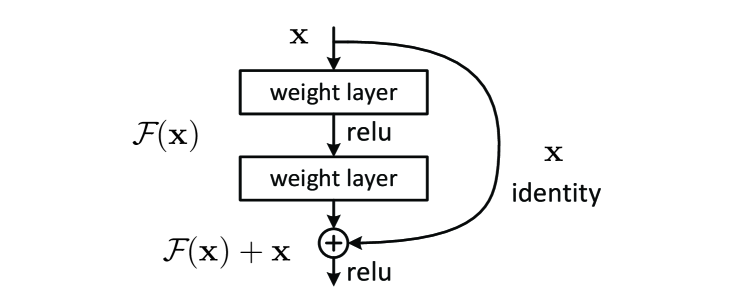

输入 x
微积分与反向传播
训练一个上百亿参数的模型，本质就是在问一个问题：每个参数该往哪个方向调一点点，才能让 loss 降一点？微积分的答案是梯度，链式法则是把梯度传到每个参数的传送带，反向传播就是这条传送带的工程实现。搞懂这一节，整个训练流程就不再像黑箱。
一图看懂
反向传播只有一句话：把网络画成一张计算图，先正向算出结果和 loss，再沿着图倒着把 loss 对每个参数的偏导一层层"批发"下去。正向是"把数据从输入算到 loss"，反向是"把梯度从 loss 传回每个参数"。两遍走完，每个参数就知道自己该往哪挪。
- 乘 W1
- 输入 x
- 中间值 hdL/dW1
中间值 h- 乘 W1
- 乘 W2dL/dh
乘 W2- 中间值 h
- loss L反向：偏导
输出 y- 乘 W2
loss L- 输出 y
导数：变化的方向与快慢
导数是微积分最基础的概念。直观地说，函数 $f(x)$ 在 $x_0$ 处的导数 $f'(x_0)$ 回答的是："$x$ 往正方向挪一小步，$f$ 会变多少？"。
$$f'(x_0) = \lim_{\Delta x \to 0} \frac{f(x_0 + \Delta x) - f(x_0)}{\Delta x}$$
导数的几何含义就是函数图像在该点的切线斜率。斜率为正，$x$ 增大 $f$ 也增大；斜率为负，$x$ 增大 $f$ 反而减小。这就给出了让 $f$ 变小的最朴素策略：沿导数的反方向走一小步，$f$ 通常就会下降一点。这就是"梯度下降"的雏形。
为什么训练模型非得会求导？因为"让 loss 变小"在数学上等价于"找到一个让函数值更低的点"，而可导函数告诉我们每一点该往哪走。如果一个模型完全不可导（比如里面全是 if/else 硬分支），梯度就不存在，只能靠进化搜索这类笨办法去碰运气。现代神经网络几乎处处可导（ReLU 在 0 处虽不可导，但工程上当作左侧导数为 0 处理），正是为了能端到端地用反向传播训练。
当函数有多个变量，比如 $f(x, y)$，对其中一个变量求导而把其他变量当常数，得到的叫偏导数 $\frac{\partial f}{\partial x}$。把所有变量的偏导数排成一个向量，就是梯度 $\nabla f = (\frac{\partial f}{\partial x}, \frac{\partial f}{\partial y})$。梯度的方向是函数上升最快的方向，所以负梯度就是下降最快的方向——这是优化算法反复用到的事实。
下面这张表把训练里最常碰到的几个导数规则一次性列出来，先混个眼熟，后面讲到 sigmoid、softmax 时会直接用到。
| 函数 $f(x)$ | 导数 $f'(x)$ | 在训练里的角色 |
|---|---|---|
| 常数 $c$ | $0$ | 常数没变化，自然导数为 0 |
| $x^n$ | $n\,x^{n-1}$ | 权重平方正则（$\ell_2$）就靠它 |
| $e^x$ | $e^x$ | 指数、softmax 的底层 |
| $\ln x$ | $1/x$ | 交叉熵损失里反复出现 |
| $a\,x+b$ | $a$ | 线性层 $Wx+b$ 的斜率 |
| $\sigma(x)=\frac{1}{1+e^{-x}}$ | $\sigma(x)(1-\sigma(x))$ | sigmoid 激活的梯度，自带"压缩" |
在训练里，我们关心的"函数"通常不是 $f(x)=x^2$ 这种一维曲线，而是把全部参数 $\theta$ 当作输入的超高维函数 $L(\theta)$——它的"地形"没法画出来，但导数的思想完全通用：在参数空间的某一点，沿某个方向挪动参数，loss 会升还是会降，全由该方向的"斜率"（方向导数）决定。梯度就是把这些方向导数打包成的向量，它指向最陡的上坡，于是负梯度就是最陡的下坡。理解了这一点，后面所有优化器（动量、Adam）都是在"负梯度"这个基础上做更聪明的修正。
一句话直觉
导数是"挪一小步会变多少"，梯度就是"每个方向各变多少"打包成向量。训练时让参数沿负梯度走，就是在找最陡的下山路。
链式法则：复合函数的导数怎么传
神经网络本质是函数的复合：$y = f_2(f_1(x))$，一层套一层。要算 loss 对最底层参数的导数，就必须用链式法则把复合关系拆开。可以把链式法则理解成"套娃求导"：最外层的误差，要一层层剥开、逐层相乘，才能传到最里层。
对复合函数 $L = L(g(x))$，链式法则说：
$$\frac{dL}{dx} = \frac{dL}{dg}\cdot\frac{dg}{dx}$$
直观含义：想知道"$x$ 变一点，$L$ 变多少"，就分两段问——先问"$g$ 变一点，$L$ 变多少"，再问"$x$ 变一点，$g$ 变多少"，最后相乘。复合层数越多，链就越长，但规则不变。
神经网络常有两三个、甚至上百层复合，链式法则的形式还是一样：每一层的局部导数乘起来，逐层相乘往下传。这就是反向传播能把 loss 对任意深处参数的导数算出来的数学根据。
用一个具体数字感受"逐层相乘"：假设 $L = (a\cdot b + b)^2$，其中 $a=2,\; b=3$。先看正向结果，再反推梯度。
- 正向：中间量 $m = a\cdot b = 6$，$n = b = 3$，$p = m + n = 9$，故 $L = p^2 = 81$。
- 从 $L$ 倒着传：先有 $\frac{\partial L}{\partial p} = 2p = 18$。
- 对 $a$ 只有一条路：$p \leftarrow m \leftarrow a$，局部导数 $\frac{\partial m}{\partial a} = b = 3$，于是 $\frac{\partial L}{\partial a} = 18 \times 3 = 54$。
- 对 $b$ 有两条路：一条 $p \leftarrow n \leftarrow b$（局部导数 $\frac{\partial n}{\partial b}=1$，贡献 $18\times1=18$），另一条 $p \leftarrow m \leftarrow b$（局部导数 $\frac{\partial m}{\partial b}=a=2$，贡献 $18\times2=36$）。两条路相加，$\frac{\partial L}{\partial b} = 18 + 36 = 54$。
| 目标 | 经过的节点路径 | 逐段局部导数 | 累计梯度 |
|---|---|---|---|
| $\frac{\partial L}{\partial p}$ | 起点（loss 自己） | — | $2p = 18$ |
| $\frac{\partial L}{\partial a}$ | $p \leftarrow m \leftarrow a$ | $\frac{\partial L}{\partial p}=18$ | $18 \times 3 = 54$ |
| $\frac{\partial m}{\partial a}=b=3$ | |||
| $\frac{\partial L}{\partial b}$（路径一） | $p \leftarrow n \leftarrow b$ | $\frac{\partial L}{\partial p}=18$ | $18 \times 1 = 18$ |
| $\frac{\partial n}{\partial b}=1$ | |||
| $\frac{\partial L}{\partial b}$（路径二） | $p \leftarrow m \leftarrow b$ | $\frac{\partial L}{\partial p}=18$ | $18 \times 2 = 36$ |
| $\frac{\partial m}{\partial b}=a=2$ | |||
| $\frac{\partial L}{\partial b}$（合计） | 两条路相加 | — | $18+36=54$ |
注意一个容易踩的坑：只要某个变量出现在多条路径里（比如本例的 $b$ 既进 $n$ 又进 $m$），它对 loss 的总梯度就是"各条路径贡献之和"，而不是只取其中一条。这就是求导的加法法则在计算图上的体现。反向传播框架内部其实在做一件等价的事：每个节点把自己收到的上游梯度，按局部导数分摊给所有下游输入，天然就处理了多路径求和——你从不需要手动去"加"，autograd 已经替你加好。但知道背后在加，能帮你读懂梯度检验时为什么数值梯度和自动梯度会一致。
当变量不再是标量而是向量、矩阵时，链式法则依然成立，只是"导数"升级成了"雅可比矩阵"（每行是某个输出对某个输入的偏导）。好消息是：反向传播里我们几乎从不直接拼出巨大的雅可比矩阵，而是让梯度（一个和参数同形状的向量/张量）顺着同样的链式法则"流"回去——这叫"向量-雅可比积"，只需要和正向同阶的计算量就能把梯度算完。这也是大模型即使参数上百亿、雅可比矩阵大得装不下，梯度却依然算得动的原因。
计算图：把公式拆成可求导的零件
举个非神经网络的生活类比：做一道分多步的菜，想改进某一步的火候（参数），就得从"最终味道（loss）"反推"哪一步影响了味道、影响多大"——这和反向传播把误差从输出反传到每一层参数，是同一个逻辑。
链式法则讲清了原理，但要工程化，需要把公式拆成一张"每个节点只做一种简单运算"的图——这就是计算图（computational graph）。每个节点要么是输入，要么是把几个输入做一次加减乘除或函数运算（如 sigmoid、softmax）。任何复杂公式都能拆成这种小零件的组合。
把上面的小例子画成图，正向（黑）把数值算出来，反向（红）逐节点算局部偏导，再用链式法则相乘。
- a = 2
- m = a·bdm/da = b = 3
m = a·b- a = 2
- b = 3
- p = m + ndp/dm = 1, dp/dn = 1
b = 3- m = a·bdm/db = a = 2
- n = bdn/db = 1
n = b- b = 3
p = m + n- m = a·b
- L = p²dL/dp = 2p = 18
L = p²- p = m + n
计算图的好处在于：每个节点的"局部偏导"都很简单（加减乘的求导是中学水平的规则），把它们乘起来就是从 loss 一路到任意输入的全局偏导。这就是为什么再复杂的网络也能用同一套机制求导——它被拆成了上千个会做小学求导的小零件。
在实践中，PyTorch 这类框架是"边跑正向边建图"的：你每写一行张量运算，引擎就在后台悄悄连一条计算图边，并把这次运算的中间结果记下来。等你调用 loss.backward()，引擎就按这张图的逆序，对每个节点套用它的反向公式。这种"动态图"的好处是写起来和写普通 Python 几乎一样自然，还能根据输入形状动态决定图结构（比如处理变长序列）。与之相对的是"静态图"（如早期 TensorFlow），先把整张图画好再喂数据——现在大模型训练混用两者之长（用 torch.compile 把动态图再编译成高效静态内核）。
反向传播：链式法则的工程化实现
反向传播（backpropagation）不是新数学，而是链式法则在计算图上的高效实现。它巧妙地利用了两个观察：
- 从 loss 倒着走，每个节点只需算一次。正向算时，每个中间值都被算了一遍；反向时，把这些中间值复用，按拓扑逆序把偏导传回去。比起对每个参数分别从 loss 正着求导（会重复计算大量中间量），这能把计算量从"参数个数倍"压到"图规模量"。
- 每个节点只关心自己的局部偏导。一个节点的反向规则是"把上游传来的梯度，乘上自己的局部偏导，再分发给下游"。节点之间彼此独立，可以像积木一样拼。这正是一切自动微分（autograd）的基础。
具体来说，反向传播对每个节点维护一个"梯度流" $\bar{v} = \frac{\partial L}{\partial v}$。反向时，节点的输出梯度 $\bar{v}_{out}$ 已知，局部偏导 $\frac{\partial v_{out}}{\partial v_{in}}$ 在正向时就能算好并缓存，于是输入侧梯度 $\bar{v}_{in} = \bar{v}_{out} \cdot \frac{\partial v_{out}}{\partial v_{in}}$，逐节点传下去。
顺便回应当初的承诺：为什么反向传播比"对每个参数各自从 loss 正着求导"快得多？关键在于复用。前向一次把每个中间值都算出来了；反向时，这些中间值被所有需要它的节点共享，每个局部导数也只算一次。结果是：反向传播的计算量和前向同阶（仅常数倍），而"对每个参数独立求导"会随参数数量线性膨胀——百亿参数下前者是后者的数十亿分之一。代价则是要多存下所有中间激活值，这正是前面"显存坑"的来由。
再给一个心智模型：把计算图想象成一条从输入到 loss 的"流水线"。正向是货物（数值）顺流而下的过程，每到一个工位（节点）就做一次简单加工；反向是"追溯单"从终点 loss 逆流而上，每个工位在单子上记下"我对最终损失负多大责任"（即局部梯度），并把上游追下来的总责任按自己的加工方式分摊给上游工位。整张图跑完，每个输入节点都拿到了自己的"责任额度"——也就是梯度。这个模型能帮你把后面遇到的任何反向传播（包括注意力、MoE 路由）都翻译成"顺流 + 逆流两张单"来思考。
常见坑
反向传播要求正向时把中间激活值缓存住，反向再拿出来用。这就是为什么训练的显存占用主要来自激活值，而不是参数本身——这也是 梯度检查点 用"重计算换显存"能成立的根因。
在大模型里，反向传播由框架的自动微分引擎自动完成，工程师几乎不手写求导。但理解它能帮你诊断三类问题：梯度消失（链上某段偏导太小，乘起来趋零）、梯度爆炸（某段太大，乘起来发散）、以及显存不够（中间激活太多撑爆显存）。这三类问题后面会反复出现。
核心主题微积分与反向传播
01导数与梯度
- 切线斜率
- 偏导数
- 梯度=下降最快方向
02链式法则
- 复合求导
- 逐层相乘
03计算图
- 节点只做简单运算
- 正向缓存中间值
04反向传播
- 从 loss 倒着走
- 复用激活值
05工程化
- autograd
- 训练显存
对新手来说，反向传播最反直觉的地方在于「正向存、反向算」这对顺序：你不需要理解每一层的数学细节，只要知道框架替你缓存了中间值、按图逆序传梯度，就能理解后续几乎所有「为什么训练这么占显存」「为什么改了网络结构就 OOM」的问题——显存压力和网络深度成正比，正是反向传播复用激活值带来的直接后果。
梯度消失：链式法则乘积的致命一例
把反向传播的「逐层相乘」想成一场接力赛：每一棒都要乘以本层的局部导数。如果每层的局部导数普遍小于 1，那乘积会按指数衰减——这就是梯度消失（vanishing gradient）的机制，也是早期神经网络「越深越难训」的根源。做个心算：设每层局部导数是 $0.25$（sigmoid 的导数上界恰好是 $1/4$），叠 5 层就是 $0.25^5 \approx 0.001$，梯度传到第 5 层只剩千分之一；叠 20 层就是 $0.25^{20} \approx 9\times10^{-13}$，接近零——深层参数永远学不动，等于网络白深。
深度时代的破解关键之一，是给梯度留一条「高速公路」。下面这张图来自何恺明等人 2015 年的 ResNet 论文，它展示的残差块结构如今是大模型里每一层的标配：

这张图从反传播的视角看只有一句话：输出是 $H(x) = F(x) + x$，反传时 $\frac{\partial H}{\partial x} = \frac{\partial F}{\partial x} + 1$。注意那个 $+1$——它意味着梯度反向流动时，除了走「权重层」这条会被衰减的路，还多了一条系数为 1 的恒等捷径，梯度可以几乎无损地直穿几十层。$F(x)$ 学的是「还差多少」，而不是「整个输出是什么」；当它学不动时，损失曲线也只是回到恒等映射附近，不会让深层彻底瘫痪。
这条设计后来被吸收进了 Transformer 的每一层（注意力与前馈网络外面都套着残差连接），也解释了为什么现代大模型敢把层数堆到上百层。你现在回头看，会发现它一点也不神秘：梯度消失是链式法则乘积的数学必然，残差连接是给这个乘积「开旁路」的工程补丁。这与本页开头的计算图是同一个体系——每一个结构设计，最终都在调整那张反向传递的「追溯单」上某一项的系数。
新手最容易搞错
很多人以为「残差连接是给正向传播多加信息」，其实它最大的价值在反向传播：让梯度多一条不衰减的路径。另一个常见错觉是把「梯度消失」当成「梯度为 0 才算数」——不是的，梯度消失指的是梯度指数级接近 0，几乎不等于严格为 0：参数每步只挪一丁点，训练慢得仿佛没动。诊断上两者的表现也很像（loss 都不降），但成因完全不同，别用一套药方处理两个病。
梯度：参数要往哪挪
反向传播跑完，每个参数 $\theta$ 都拿到一个梯度 $\frac{\partial L}{\partial \theta}$。这个梯度指明了"参数往哪挪一点点能让 loss 降一点"。最朴素的更新规则是：
$$\theta \leftarrow \theta - \eta \,\nabla_\theta L$$
其中 $\eta$ 是学习率，控制每步走多大。这就是梯度下降——所有现代优化器的共同祖先。梯度的方向指明了走哪边，学习率指明了走多远。
学习率 $\eta$ 是训练里最敏感的一个旋钮。$\eta$ 太大，每一步迈得太远，可能在谷底两边来回横跳甚至发散（想象从山坡上往下冲却刹不住车）；$\eta$ 太小，每步只挪一丁点，训练会慢到难以接受。一个常用比喻：梯度告诉你"下坡朝哪"，学习率决定"这一步迈多大"。现代做法多用"预热 + 衰减"——开头小步试探、中途大步前进、后期再收小，配合 AdamW 这类自适应优化器，把调学习率的痛苦降到最低。
另外要小心：梯度为 0 并不等于到了谷底。在高维里，一个点是鞍点（某方向是谷、另一方向是峰）的概率远大于严格的局部极小，而鞍点处梯度同样为 0。这也是为什么纯梯度下降容易"卡"在鞍点附近，需要动量或随机噪声（SGD 的小 batch 噪声）来抖出去——这些正是下一篇优化算法要解决的。
这里有个常被忽略但关键的事实：梯度只给出局部最优方向，并不意味着沿它走就一定能到全局最优。loss 曲面在百亿参数下极其复杂，充满鞍点和局部极小，怎么走得稳走得好，是下一篇 优化算法基础 的主题。
拿最简单的 $f(x)=x^2$ 手动走几步，把"梯度下降"从一句话变成一组数字。从 $x_0=5$ 出发，学习率 $\eta=0.3$，因为 $f'(x)=2x$：
| 步数 | $x$ | $f(x)=x^2$ | $f'(x)=2x$ | 更新 $x \leftarrow x - 0.3\,f'(x)$ |
|---|---|---|---|---|
| 0 | 5.0000 | 25.0000 | 10.0000 | 5 − 3.0 = 2.0000 |
| 1 | 2.0000 | 4.0000 | 4.0000 | 2 − 1.2 = 0.8000 |
| 2 | 0.8000 | 0.6400 | 1.6000 | 0.8 − 0.48 = 0.3200 |
| 3 | 0.3200 | 0.1024 | 0.6400 | 0.32 − 0.192 = 0.1280 |
| 4 | 0.1280 | 0.0164 | 0.2560 | 0.128 − 0.0768 = 0.0512 |
可以看到 loss 从 25 一路掉到 0.0164，而且越接近谷底走得越慢——这正是梯度（斜率）本身在变小导致的。下面的交互图把这条收敛曲线画出来（纵轴用对数刻度，才能同时看清 25 和 0.000001 这种跨好几个数量级的变化）。
一次训练迭代长什么样
把前面的零件拼起来，一个标准的训练迭代（training step）就是"取数据 → 正向 → 反向 → 更新"四步循环。下面的时序图展示框架内部这一圈是怎么交接的，下面的流程图则强调它是一个不断回到起点的循环。
sequenceDiagram
participant Data as 数据批 (x, y)
participant Fwd as 正向 forward
participant Loss as 损失 L
participant Bwd as 反向 backward
participant Opti as 优化器
Data->>Fwd: 喂入一批样本
Fwd->>Loss: 算出预测 ŷ 与损失 L
Loss->>Bwd: 调用 L.backward()
Bwd->>Opti: 传出每个参数 θ 的 ∂L/∂θ
Opti->>Fwd: 用梯度更新 θ，进入下一轮
- 开始：随机初始化 θ
- 取一批 (x, y)
- 开始：随机初始化 θ
- 更新：θ ← θ - η·∇θL
正向：算 ŷ 和 L- 取一批 (x, y)
反向：算 ∂L/∂θ- 正向：算 ŷ 和 L
更新：θ ← θ - η·∇θL- 反向：算 ∂L/∂θ
| 阶段 | 做什么 | 产出 | 谁负责 |
|---|---|---|---|
| 取数据 | 从训练集抽一个 batch | 输入 $x$ 与标签 $y$ | DataLoader |
| 正向 forward | 把 $x$ 送过网络 | 预测 $\hat y$ 与 loss $L$ | 模型前向 |
| 反向 backward | 从 $L$ 沿图反传 | 每个 $\theta$ 的 $\partial L/\partial\theta$ | autograd 引擎 |
| 更新 step | 用梯度改参数 | 新参数 $\theta$ | 优化器（如 AdamW） |
可以把这"四步"和前面的概念一一对上号：取数据是把 $x,y$ 准备好；正向就是一路把复合函数算到 loss；反向是链式法则在工程图上的落地；更新则是把梯度真正"用掉"、改写参数。一个 epoch 等于"把所有训练样本都走完一遍"这类四步循环；一个 step 是其中一次循环。大模型训练往往要跑几万甚至上百万个 step，所以每一圈的效率和数值稳定性都会被放大成巨大的差异。
数值梯度检验：给 autograd 上一道保险
反向传播的推导容易在某一层写错（尤其自己实现自定义算子时）。工程上常用数值梯度来给自动微分"验尸"：用导数的定义直接估算 $\frac{\partial L}{\partial \theta_i} \approx \frac{L(\theta+\varepsilon)-L(\theta-\varepsilon)}{2\varepsilon}$，把这个粗糙但几乎不会错的值，和 autograd 给出的值对比，两者接近就说明反向传播写对了。
| 方式 | 做法 | 优点 | 缺点 |
|---|---|---|---|
| 数值梯度 | $(L(\theta+\varepsilon)-L(\theta-\varepsilon))/(2\varepsilon)$ | 实现极简单、几乎不会错 | 慢（每个参数要算两次前向）、有浮点误差 |
| 解析 / 自动梯度 | 链式法则精确求导 | 快、精确 | 需正确构建计算图，手写易错 |
具体算一下中心差分的精度：仍用 $f(x)=x^2$，$x=2$，$\varepsilon=0.001$。前向差分 $(f(2.001)-f(2))/0.001 = (4.004001-4)/0.001 = 4.001$；中心差分 $(f(2.001)-f(1.999))/0.002 = (4.004001-3.996001)/0.002 = 4.000$。而精确导数 $f'(2)=4$。可见中心差分（4.000）比前向差分（4.001）更接近真值——差的 0.001 正是前向差分的一阶截断误差。两者在 $\varepsilon\to 0$ 时都收敛到解析梯度，检验时通常要求相对误差在 $10^{-5}$ 量级以内才算通过。
顺带一提，数值梯度检验对"归一化层、dropout"这类带随机性或依赖 batch 统计的算子要小心——检验时应把它们切到 eval/确定性模式，否则数值和自动梯度会因为你没固定随机性而"对不上"，误以为反向写错了。
实际训练大模型时不会每步都做数值检验（太慢），但会在调试新算子、或对反向实现不放心时跑一次。这也是为什么理解"导数到底是什么"仍有工程价值：它是检验一切梯度正确性的最后裁判。
展开：最小代码——用 autograd 体验反向传播
import torch
# 两个参数，requires_grad 告诉 autograd 要跟踪它们
a = torch.tensor(2.0, requires_grad=True)
b = torch.tensor(3.0, requires_grad=True)
# 正向：L = (a * b + b) ** 2
p = a * b + b
L = p ** 2 # L = 81
# 反向：从 L 倒着传梯度
L.backward()
# autograd 已经算好了 dL/da 和 dL/db
print(a.grad, b.grad) # tensor(54.) tensor(54.)
# 手算验证：
# p = a*b + b = 6 + 3 = 9, L = p**2 = 81
# dL/dp = 2p = 18
# dL/da = dL/dp * dp/da = 18 * b = 18 * 3 = 54
# dL/db = dL/dp * dp/db = 18 * (a + 1) = 18 * 3 = 54
# 注意 b 有两条路径(p←n←b 和 p←m←b)，相加后仍是 54手算偏导在多层网络里既繁琐又易错，这正是自动微分的价值——你只管写正向，梯度自动来。但偶尔用小例子手算一次，能让你对"反向传播到底在干什么"有牢固的直觉。代码里 requires_grad=True 就是告诉框架：请为这个张量构建计算图、并在 .backward() 时沿着图反传梯度。
展开：三道自测题（检验你是否真懂）
- 方向判断：若某参数梯度为 $+0.7$，学习率 $\eta=0.1$，该参数下一步应该变大还是变小？为什么？（答：变小，因为更新是减去 $\eta$ 乘梯度，损失在该方向上升，要往反走。）
- 链式法则：设 $L=(2x+1)^2$，先正向再反推 $\frac{dL}{dx}$ 在 $x=1$ 处的值。提示：令 $u=2x+1$，则 $L=u^2$，$\frac{dL}{dx}=\frac{dL}{du}\frac{du}{dx}=2u\cdot 2=4u$，代入 $x=1$ 得 $u=3$，故 $\frac{dL}{dx}=12$。
- 两条路径：回顾本页 $L=(a\cdot b+b)^2$ 的例子，为什么对 $b$ 的梯度是"两条路径相加"而不是直接取一条？因为 $b$ 同时参与 $n=b$ 和 $m=a\cdot b$ 两个中间量，loss 通过两条独立支路回到 $b$，按求导的加法法则要加起来。
要点速查
如果时间只够记一句话：导数是"方向"，链式法则负责"传"，反向传播负责"高效地传"，而梯度就是最终交给优化器的"行动指南"。
- 导数：函数在某点的变化率，几何即切线斜率。偏导是多变量下"对某一个变量"的导数。
- 梯度：偏导排成的向量，指向函数上升最快方向，负梯度即下降最快方向。
- 链式法则：$\frac{dL}{dx}=\frac{dL}{dg}\frac{dg}{dx}$，复合函数导数逐层相乘，多路径时相加。
- 计算图：把公式拆成只做简单运算的节点链，使链式法则可工程化。
- 反向传播：在计算图上倒着跑链式法则，复用正向中间值，一次算出全部参数梯度。
- 数值梯度检验：用定义 $\frac{L(\theta+\varepsilon)-L(\theta-\varepsilon)}{2\varepsilon}$ 给 autograd 验伤。
- 显存来源：反向需要复用正向激活值，激活值是训练显存的大头。
参考文献与延伸阅读
- 3Blue1Brown《What is backpropagation really doing?》— 用最直观的动画讲清反向传播在算什么，强烈推荐先看 · YouTube 视频
- Chris Olah《Calculus on Computational Graphs: Backpropagation》— 把计算图和反向传播的关系讲得最清楚的一篇经典博客 · colah.github.io
- PyTorch《Automatic Differentiation with torch.autograd》— 工程侧的官方入门，动手写一遍 autograd 求梯度 · 官方教程
- Ian Goodfellow 等《Deep Learning》第 6 章（Backpropagation 与 Automatic Differentiation）— 教材级的严格推导 · deeplearningbook.org
- He 等《Deep Residual Learning for Image Recognition》— 残差连接原始论文，本页「给梯度开旁路」一节的出处，也是所有深度模型的标配结构源头 · arXiv:1512.03385
接下来
梯度拿到了，下一步是怎么用它更新参数。朴素梯度下降在百亿参数上并不好用，下一节 优化算法基础 看 SGD、动量、Adam/AdamW 如何让训练又稳又快；之后 神经网络基础 把这些零件组装成最简单的网络；注意力机制里的反向传播细节可看 注意力机制。
权威延伸资料
围绕“微积分与反向传播”继续深入
本章把阅读大模型论文所需的数学和学习理论补齐：向量与矩阵、梯度和链式法则、优化器，以及强化学习的基本对象。
阅读提示：不要只记优化器名称；要能解释梯度从哪里来、参数为什么更新、以及奖励信号为何可能不稳定。
- Deep Learning ↗
覆盖线性代数、概率、数值计算、神经网络和优化，是本章公式的长期参考书。
- CS231n: Optimization · Backpropagation ↗
用计算图和局部梯度解释反向传播，并把学习率、动量和二阶信息的作用讲清楚。
- Automatic Differentiation with torch.autograd ↗
将链式法则映射到真实张量代码，适合验证页面中的梯度推导和排查训练实现。
- Adam: A Method for Stochastic Optimization ↗
Adam 和 AdamW 的共同起点。阅读时关注一阶、二阶矩估计和偏置修正，而不是只背默认超参数。
- Reinforcement Learning: An Introduction ↗
MDP、价值函数、策略梯度和时序差分学习的经典教材，为 RLHF、GRPO 和 Agentic RL 铺垫。
资料优先选用原始论文、官方文档、大学课程和公共机构材料；链接按 2026-08-10 检索，具体版本以来源页面为准。
篇章视角
围绕“微积分与反向传播”继续深入
发展脉络
从 n-gram 的局部统计到反向传播和梯度优化，再到策略梯度与偏好优化，现代大模型仍建立在概率建模、微积分和数值稳定性之上。
机制抓手
阅读公式时固定追踪张量形状、随机变量、目标函数和梯度估计的来源；任何优化器都应回到“估计什么、更新什么、误差如何传播”。
工程权衡
更大的 batch、学习率或模型并不自动带来更好结果；梯度噪声、条件数、正则化和数据分布会改变稳定区间。
前沿观察
Muon、分层学习率、混合精度和 RLVR 等新方法都在重新讨论优化信号的质量与成本，结论必须结合任务和规模验证。
实践检查能手算一次交叉熵、KL、反向传播和优势估计，并解释数值溢出、梯度爆炸与奖励稀疏的处理方式。
学习目标
能把复合函数画成计算图，手推每条局部导数，并解释反向模式自动微分为何适合“参数多、标量损失”的训练。
先修关系
先修高中代数与函数；遇到公式时回到本篇的线性代数、概率和梯度页面核对符号。
最小实验
对 f(x, w) = mean((xw - y)^2) 同时实现手推梯度、中心有限差分和 PyTorch autograd；固定随机种子，在 3 组 shape 上比较结果，再故意移除一个链式因子定位错误。
验收标准
三种梯度的最大相对误差小于 1e-4；能用一张计算图标出前向值、局部梯度和累计梯度，并提交一次错误梯度的定位记录。